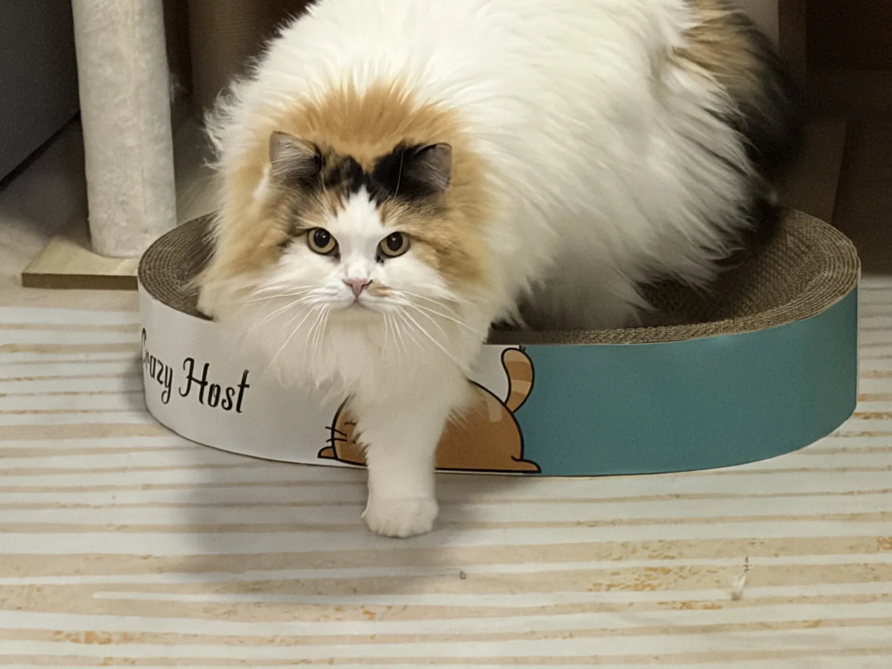

指导老师
曾老狮
珞珈心源指导老狮，理事会幕僚，心源小友们成长的促进者和见证者。生命旅行者和体验者，修行者，喜欢品尝鲜美的灵魂和美食。高敏感 I 人，偏好深度联结。爱好包括游戏、动漫、电影、种菜、看水草生产氧气、看长臂猿爬树、撸猫。
“行至艰难处，正是修行时。”

珞珈心源指导老狮，理事会幕僚，心源小友们成长的促进者和见证者。生命旅行者和体验者，修行者，喜欢品尝鲜美的灵魂和美食。高敏感 I 人，偏好深度联结。爱好包括游戏、动漫、电影、种菜、看水草生产氧气、看长臂猿爬树、撸猫。
“行至艰难处，正是修行时。”